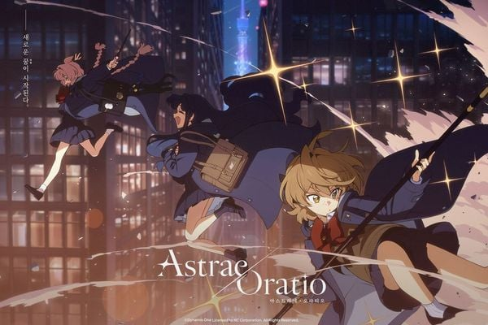
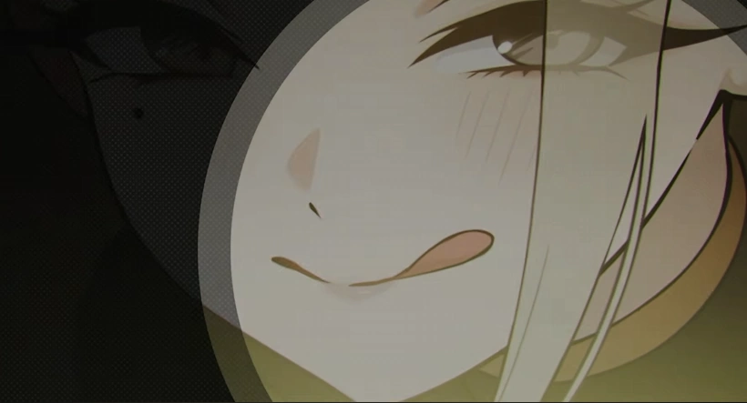
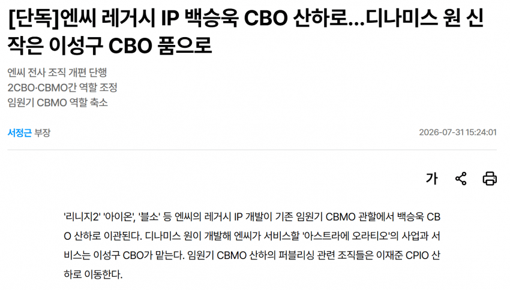
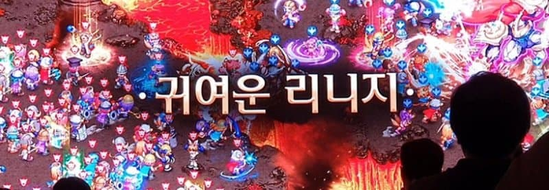

이번에 클베시작한 아스트라에 오라티오. 나름 괜찮게 뽑은것같은데
일단 NC라는 투자자에 개발사가 서브컬쳐 유저들이 좋지않게보는
전 동료들을 통수치고 나간 탈주닌자 집단인 디나미스원이라는 족쇄를
태어날때부터 달고 있기에 자리잡으려면 적당히 잘뽑은걸로는 힘들듯한데
사실 또하나 걱정되는 족쇄가 하나가 더있다


그렇다 총괄이 시발 트릭스터M 만들고 귀여운리니지 만든다던 그새끼임
괜찮은 부분이 직관적으로 느껴지긴 하지만 이런 류가 크게 성공하기엔 좀 늦게 나왔단 인상이었음 짱겜이 너무 독보적이야